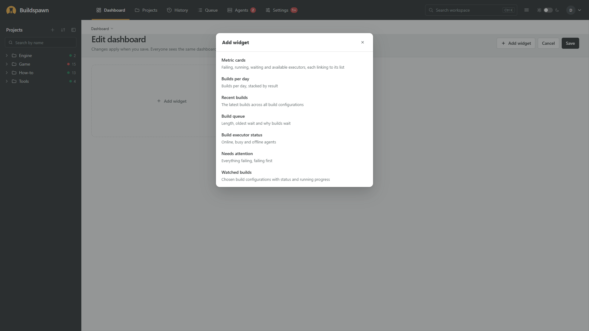

Dashboard
Choose what the dashboard shows: the builds, failures, queue, agents and numbers your team should see first.
Click Dashboard in the top bar to open it. The dashboard is a grid of widgets. An administrator arranges it, and everybody sees the same dashboard. Each widget only shows what the viewer is allowed to see.
The full list of projects and build configurations is on the Projects page, not here. Use the dashboard for the few things that matter most.
Dashboard settings
You need the System administrator role to change the dashboard. Other users see the dashboard but no Edit dashboard button.
Start with the suggested widgets
When the dashboard is empty, you see Arrange the dashboard with two buttons:
- Click Start with suggested widgets. Buildspawn adds a useful set: metric cards, builds per day, the build queue, executor status, recent builds and failing builds.
- Move, resize or remove widgets as you like (see below).
- Click Save.

Change the dashboard
- Click Edit dashboard. The title changes to Edit dashboard.
- Change the widgets (see the table below).
- Click Save to publish the dashboard to everybody, or Cancel to throw your changes away.
Each widget has a bar with these buttons:
| Button | What it does |
|---|---|
| Drag handle (dots) | Drag the widget to a new place. |
| ‹ › | Move earlier or later in the grid. |
| Narrower / Wider | Change the width. The grid has 12 columns; a widget is 2 to 12 wide. |
| Shorter / Taller | Change the height, from 1 to 6 rows. |
| Widget options | Change the title and the widget's own options. |
| × | Remove the widget. |
The size is shown at the top right of each widget, for example 8 × 2 (8 columns wide, 2 rows high).
Add a widget
- In edit mode, click Add widget.
- Pick a widget from the list.
- Open its Widget options to set it up, then click Save on the dashboard.

Widget types
| Widget | What it shows | Options |
|---|---|---|
| Metric cards | Four cards: failing configurations, running builds, builds waiting in the queue and available executors. Each card links to its list. | Title |
| Builds per day | A bar chart of builds per day, stacked by result, with the success rate, average duration and average queue time. | Title, period: last 24 hours, 7, 14 or 30 days |
| Recent builds | The latest builds across all build configurations, with result, changes, start time and duration. | Title, how many to show |
| Build queue | How many builds wait, the oldest wait, why each build waits, and the waits over the last hour. | Title |
| Build executor status | Online, busy and offline agents, and idle executors. | Title, list offline agents |
| Needs attention | Everything that is failing, failing first. | Title, include unstable builds, how many to show |
| Watched builds | The build configurations you choose, with their status, recent history and running progress. | Title, the build configurations (type to find one, then order them) |
A dashboard holds up to 30 widgets, and a Watched builds widget up to 50 build configurations.
Related pages
- Settings overview: every administrator page in one list.
- Queue and Agents page: the full lists behind the queue and executor widgets.
- Load Statistics: long-term charts of executors and queue length.
Tips
- Leave a widget's title empty to use its own name.
- A user who may not see a build configuration in a Watched builds widget does not see it at all, so one dashboard works for the whole studio.
- Widgets refresh by themselves. If the server cannot be reached, a widget keeps the last data and says Showing last known data.
- Put a Watched builds widget with your release build configurations at the top, so everybody sees at once whether the game builds.